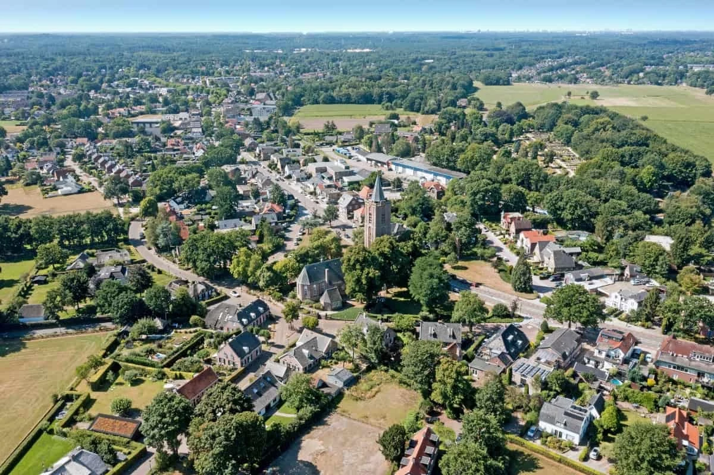

Soest (Nederland)

| Coördinaten | 52°11'NB, 5°17'OL |
| Inwoners | 47.8531 |
| Gemiddeld inkomen | €44.200 |
Inhoudsopgave
Algemeen
Soest is een plaats en gemeente in de provincie Utrecht, gelegen in het midden van Nederland. De gemeente telt ongeveer 47.000 inwoners en bestaat onder andere uit de kernen Soest en Soesterberg. Door de centrale ligging en goede verbindingen met steden zoals Utrecht en Amersfoort is Soest een populaire woonplaats.
Soest staat vooral bekend om zijn natuurlijke omgeving. De Soesterduinen vormen een bijzonder natuurgebied met zandverstuivingen en bossen, waar veel mensen wandelen en recreëren. Daarnaast zijn er diverse parken, fietsroutes en groene gebieden in en rond de plaats.
De geschiedenis van Soest gaat terug tot de middeleeuwen, toen het een agrarisch dorp was. In de 20e eeuw groeide Soest sterk door woningbouw en verbeterde infrastructuur. Hierdoor ontwikkelde het zich tot een moderne gemeente met voorzieningen zoals winkels, scholen en sportverenigingen.
Tegenwoordig is Soest een rustige woonplaats met een mix van natuur en stedelijke voorzieningen. Het speelt ook een rol in het onderwijs in de regio, met meerdere middelbare scholen, waaronder het Griftland College.
Referenties
- https://allecijfers.nl/gemeente/soest/ (06 mei 2026)